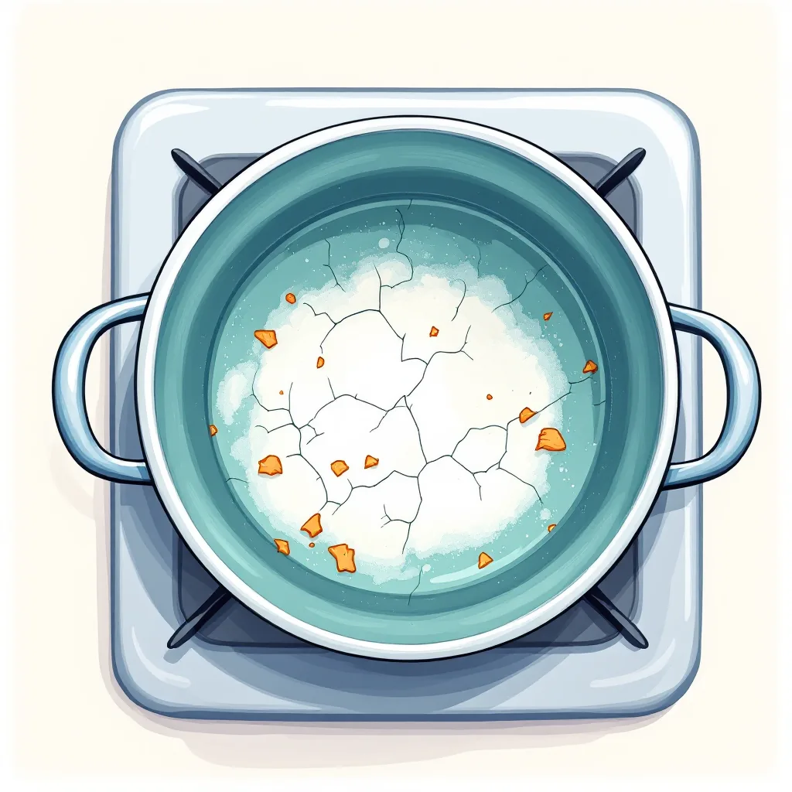
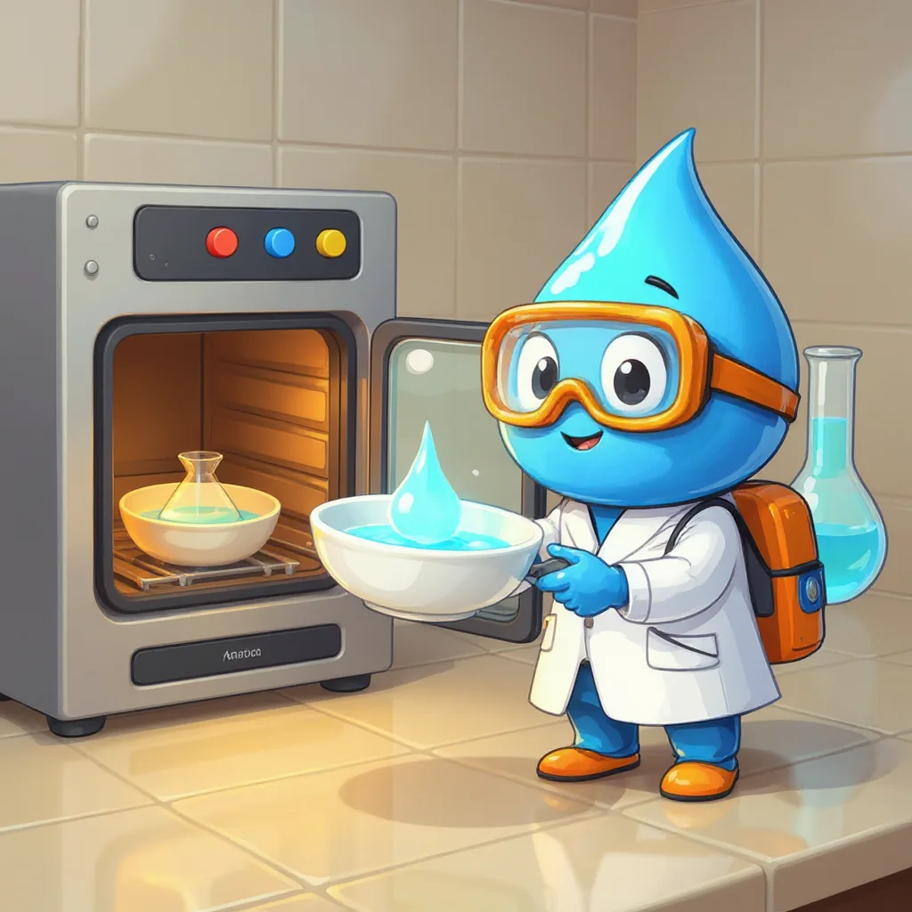
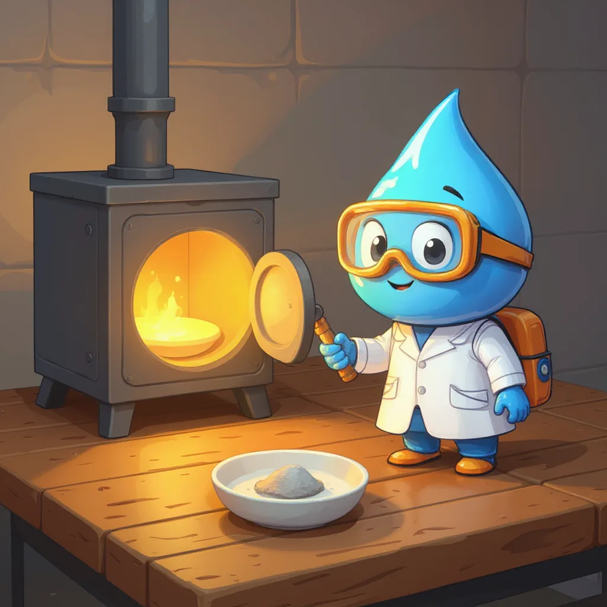

Parámetro 6 de 6
Sólidos totales y volátiles
Lo que queda cuando el agua se va.
¿Qué son los sólidos?
Para empezar, los sólidos son todo lo que queda cuando al agua se le quita el agua misma. Por ejemplo, si una olla con agua hierve hasta secarse, en el fondo aparece una costra: esos son los sólidos. Algunos estaban disueltos, como la sal, y otros flotaban, como el barro. Además, se miden en miligramos por litro, es decir, cuántos miligramos de residuo deja cada litro de agua.

Sólidos totales

Por otra parte, en el laboratorio los sólidos totales se miden en un recipiente de porcelana llamado cápsula. Primero, se pesa la cápsula vacía; después, se le agrega un volumen conocido de muestra y se seca en un horno a unos 105 °C hasta que el agua se evapora. Finalmente, se pesa otra vez: la diferencia de peso corresponde a los sólidos totales.
Sólidos volátiles y fijos
Luego, esa misma cápsula se calienta en un horno mucho más caliente, llamado mufla, a unos 550 °C. A esa temperatura, la materia orgánica, como restos de hojas o microbios, se quema y desaparece; por eso, a esa parte se le llama sólidos volátiles. En cambio, lo que resiste, como la arena y los minerales, queda como ceniza y se llama sólidos fijos. Así, se parece a una fogata: la leña se quema, pero la ceniza queda.

Del horno a la mufla, paso a paso
- PesarLa cápsula vacía.
- Secar a 105 °CCon la muestra, hasta que el agua se evapore.
- PesarEl aumento de peso son los sólidos totales.
- Calcinar a 550 °CEn la mufla se quema la materia orgánica.
- PesarLo que se perdió son los sólidos volátiles.
Por ejemplo, si 100 mL de muestra dejan 25 mg de residuo, un litro, que es diez veces más, dejaría 250 mg. Así, los sólidos totales serían 250 mg/L.
De hecho, los sólidos volátiles indican cuánta materia orgánica lleva el agua. Por eso, son muy altos en las aguas residuales, que llevan restos de comida y otros desechos.
Laboratorio virtual: pesar los sólidos
Sigue los pasos con el botón azul.
Calculadoras de sólidos
Mini-reto
Después de la mufla, la cápsula pesa menos que antes. ¿Qué se perdió?